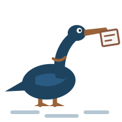

大洲市民の非公式情報サイト
大洲で生まれ育った市民の1人が、1人で運営しています。
市役所や議会が出す情報は、大切で正確です。でも正直、文章が硬くて、
自分に関係あるのかどうか分かりにくい。
だからこのサイトでは、硬い資料を暮らしの言葉に「翻訳」しています。
ここを入り口に、正しい公式の窓口へつながってもらえたら嬉しいです。

大洲で生まれ育った市民の1人が、1人で運営しています。
市役所や議会が出す情報は、大切で正確です。でも正直、文章が硬くて、
自分に関係あるのかどうか分かりにくい。
だからこのサイトでは、硬い資料を暮らしの言葉に「翻訳」しています。
ここを入り口に、正しい公式の窓口へつながってもらえたら嬉しいです。
市長選や議会の話題も扱いますが、特定の候補者・政党を推すことも、けなすこともしません。 公表されている事実と数字だけを基に書きます。偏りを感じたら、遠慮なくご指摘ください。
スクショではなく、テキストで。 公式の画像や資料をそのまま貼ることはせず、中身を読み込んだ上で、自分の言葉で書き直しています。
出典は必ず明記。 どの資料を参考にしたかを記事の末尾に並べ、公式へのリンクを付けています。
下調べはAI、判断は人間。 資料に目を通す下調べはAIアシスタントに手伝ってもらいますが、 何を取り上げるか・どう感じたか・公開前の最終チェックは、すべて運営者本人がやっています。

肱川のうかいの鵜（う）が、魚のかわりにメモをくわえています。 鵜が川から魚をくわえて上がってくるように、大洲の資料から要点をくわえて運んでくる—— このサイトの役回りをそのまま姿にしたマスコットです。 404ページやお問い合わせなど、ところどころに顔を出します。
運営は、私1人とAIアシスタント「クロコ」の2人だけ。足りないコンテンツも、まだたくさんあります。
「こんな情報が知りたい」「この話題を取り上げてほしい」——どんな小さなことでも、 Googleフォームから声をもらえると更新の励みになります。名前もメールアドレスも要りません。